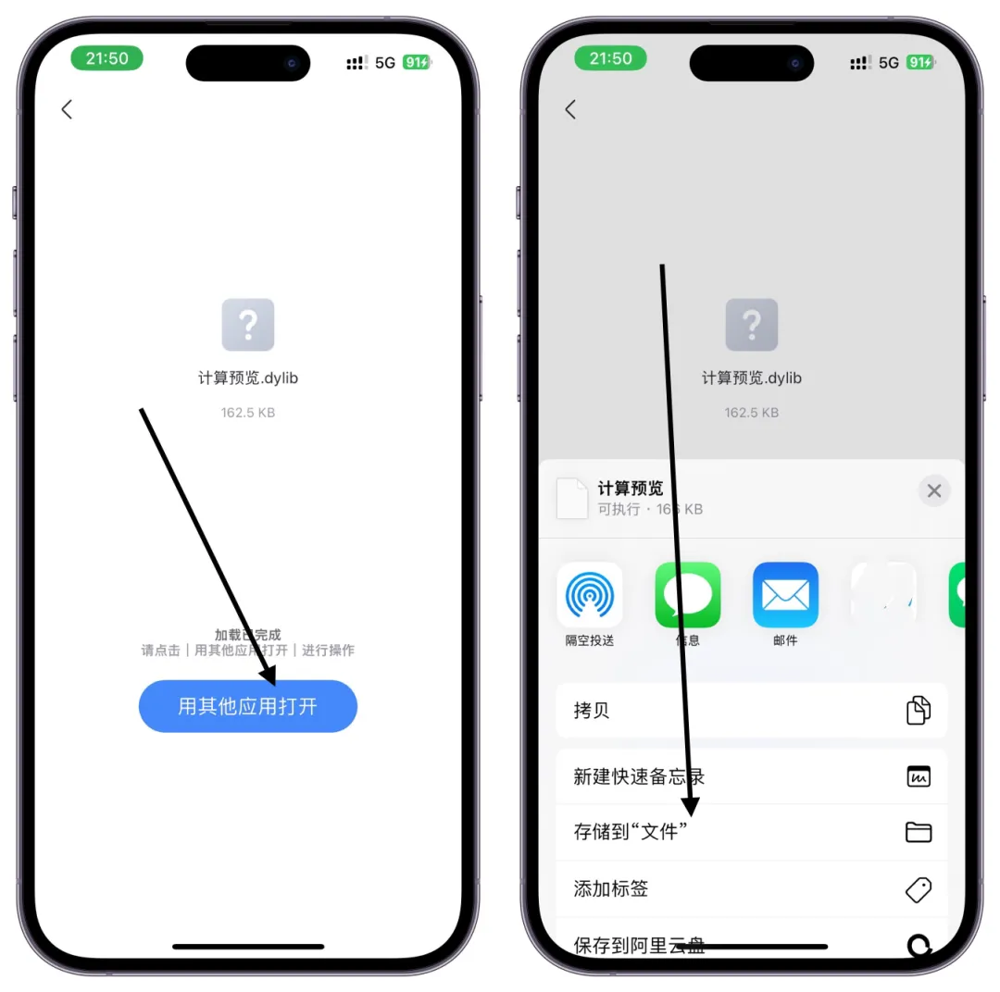
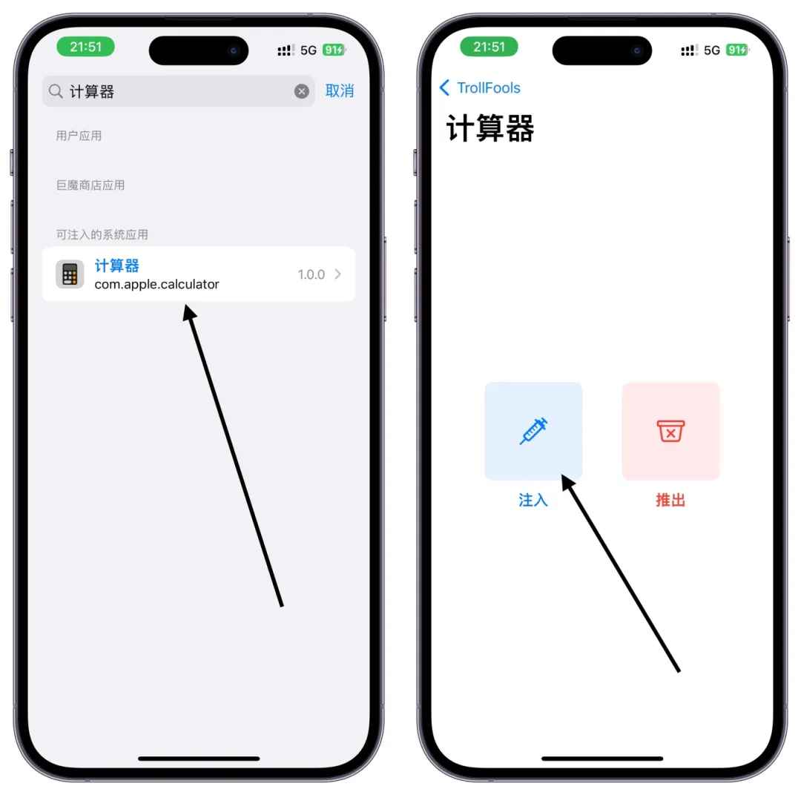
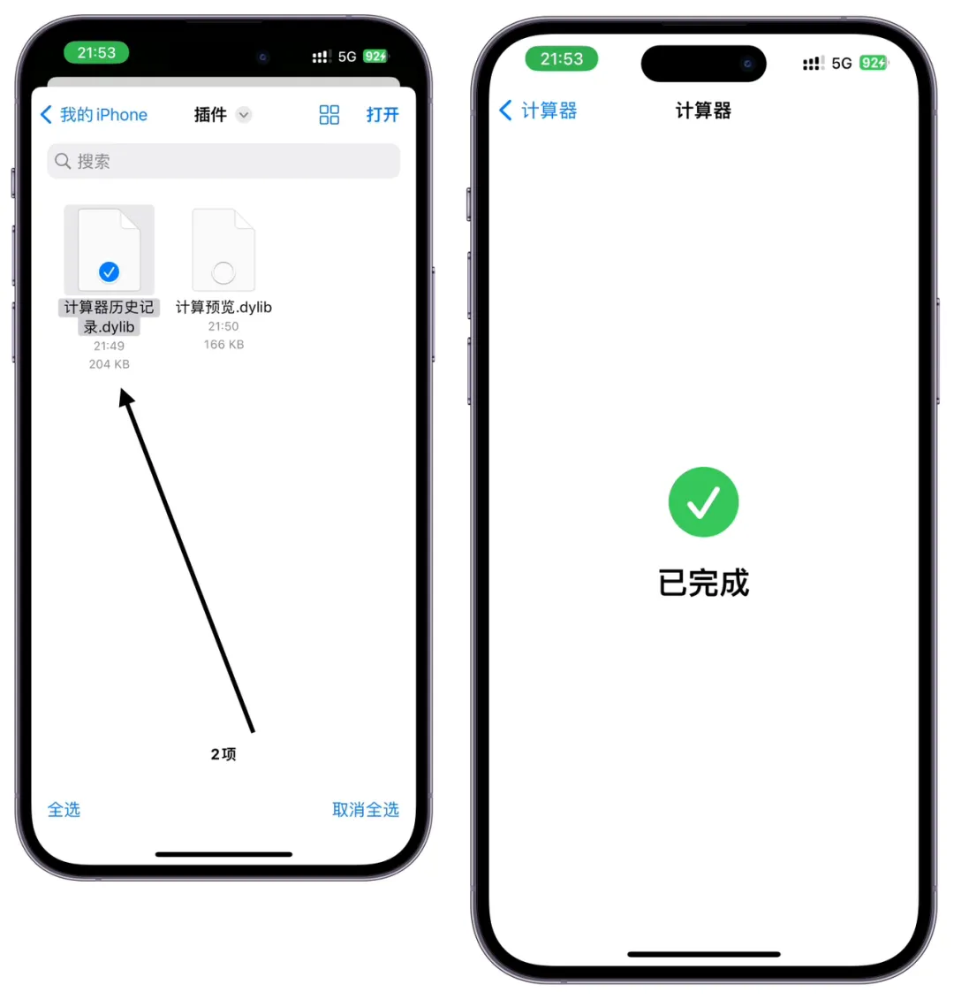
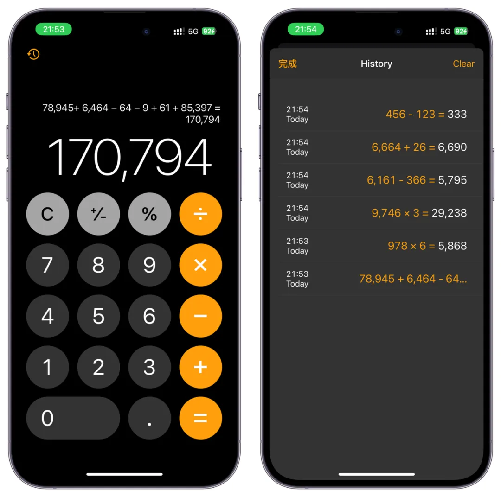
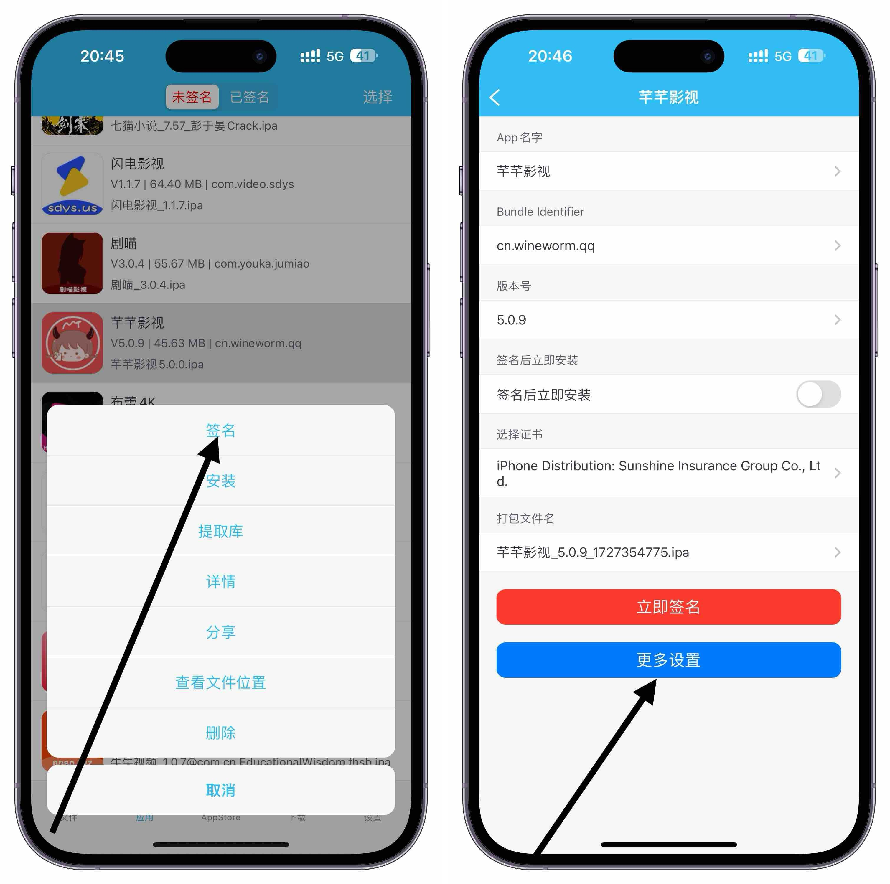
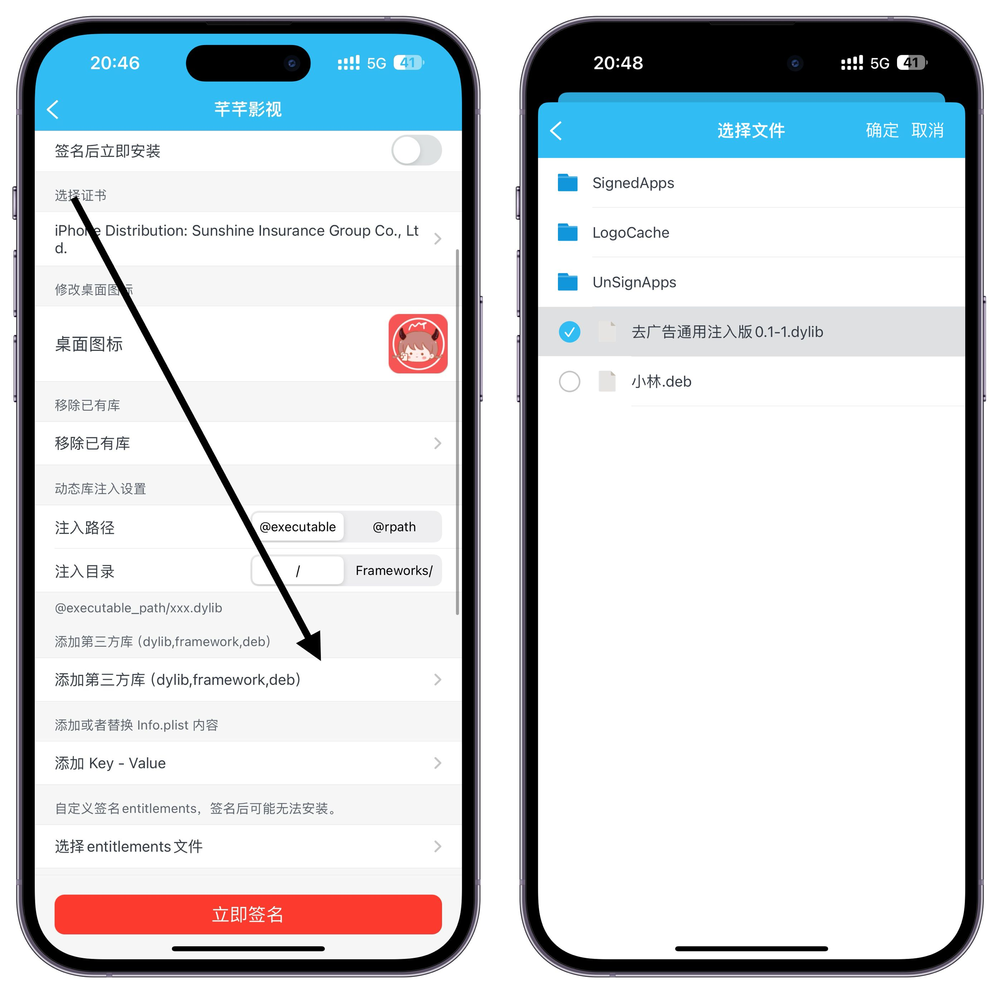

- 插件有dylib/deb两种 -
所需工具：轻松签全能全，一般签名工具，都可以注入，或者TrollFools（主要使用TrollFools），具体在哪里找到这些插件就不细说了，找不到上面迅雷和UC网盘会不定期更新
具体作用：注入一些带功能的插件，软件就会增加一下功能，比如常见的去广告，给APP加密，每日进如APP都需要输入 密码才能进入
本站插件地址：上面迅雷或者UC里面进去，——巨魔专区——TrollFools＋插件包（插件注入器）——dylib插件包
- 巨魔注入插件方法 -
首先需要配合TrollFools 还没安装巨魔的看这里: 巨魔安装教程
已经安装巨魔还没安装TrollFools的 看这里：TrollFools安装教程
都已经安装找到我们的插件 不管什么网盘下载的 ，点击，其他应用打开，保存到文件

保存到文件后，打开TrollFools，首页搜索计算器，点击，选择注入

找到我们保存到文件的对应插件，勾选，然后右上角打开即可，等待注入完成即可

打开我们的计算器，计算，是不是和平时的不一样了，还有左上角可以查看历史计算记录，这只是随便举例一个，如果你要删除注入的插件点击推出即可，可以批量推出也可以只删除某个插件，不同的插件有不同的功能

- 签名工具注入方法 -
我们以轻轻签为例子，经常用签名功能的都懂哈（签名工具和巨魔的TrollFools不一样 ）签名工具需要找到这个APP的ipa安装包然后，多开安装的第二个一模一样的APP才能注入，而巨魔的TrollFools可以直接注入到手机已安装的APP或者系统自带的APP ,签名工具是无法做到这样的
打开我们对应注入插件IPA点签名，点更多设置

下拉找到添加第三方库，进入文件勾选我们下载的插件，（插件需要保存到轻松签目录里面的文件）

注入好了直接签名即可即可看见注入成功
注意：巨魔的TrollFools 可以直接将插件注入已安装到手机的APP或者系统APP，简单方便非常好用
但是轻松签需要多开APP或者删除APP添加IPA包签名时候注入，很多插件，轻松签等签名工具注入是没用的